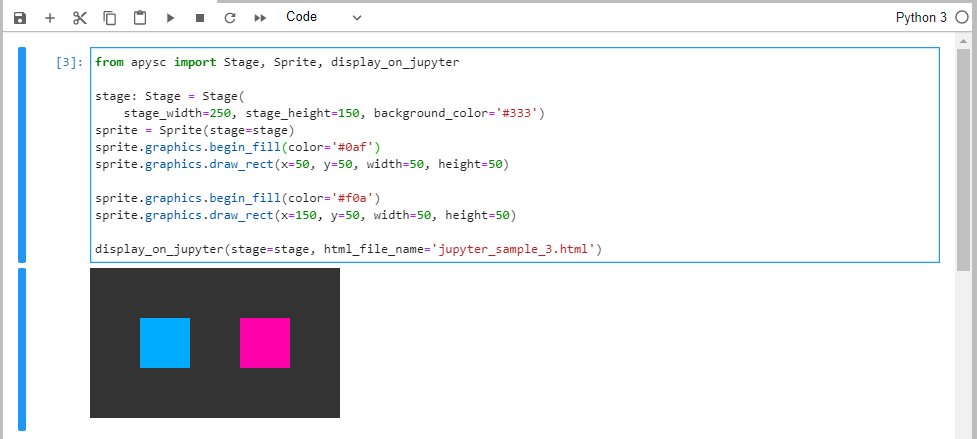

※この翻訳ドキュメントはスクリプトによって出力・同期されています。内容が怪しそうな場合はGitHubにissueを追加したり英語の原文の確認をお願いします。
display_on_jupyter インターフェイス¶
このページではdisplay_on_jupyter関数のインターフェイスについて説明します。
インターフェイス概要¶
display_on_jupyter関数はapyscによって生成されたHTMLをJupyter上で表示します。
必要とされるインストールなどの対応¶
このインターフェイスはJupyterのライブラリの事前のインストールが必要です。もしインストールされていなければpip install notebookなどのコマンドでインストールしておく必要があります。
詳細は以下をご確認ください:
また、このインターフェイスはIPython.display.IFrameのインターフェイスを使用しています。もしも該当のインターフェイス関係でエラーが発生した場合Jupyterのアップデートをお試しください。
特記事項¶
VS Code上のJupyterは現在サポートされていません（VS Code上の制限に起因するため将来サポートするかどうかは未定です）。
Jupyter notebook 及び JupyterLabはサポートしています。
基本的な使い方¶
出力結果のHTMLをJupyter上で表示するためにsave_overall_html関数の代わりにdisplay_on_jupyterを使用することができます。
このインターフェイスは複数のHTMLファイルを保存する際にファイル名が被らないようにするためにhtml_file_name引数にユニークなファイル名の指定が必要です。この値にユニークな値を指定しない場合HTMLが上書きされてしまいます。
import apysc as ap
ap.Stage(
stage_width=250, stage_height=150, background_color='#333')
sprite = ap.Sprite()
sprite.graphics.begin_fill(color='#0af')
sprite.graphics.draw_rect(x=50, y=50, width=50, height=50)
sprite.graphics.begin_fill(color='#f0a')
sprite.graphics.draw_rect(x=150, y=50, width=50, height=50)
ap.display_on_jupyter(html_file_name='jupyter_sample_1.html')

このインターフェイスはJupyterLabもサポートしています:

display_on_jupyter API¶
特記事項: このAPIドキュメントはドキュメントビルド用のスクリプトによって自動で生成・同期されています。そのためもしかしたらこの節の内容は前節までの内容と重複している場合があります。
[インターフェイスの構造] display_on_jupyter(html_file_name:str, *, minify:bool=True) -> None
[インターフェイス概要] Save the overall HTML and display it on the Jupyter.
[引数]
html_file_name: str, default ‘index.html’出力されるHTMLのファイル名。
minify: bool, default TrueHTMLを最小化（minify）するかどうかの真偽値。Falseの設定はデバッグ時などに役に立つことがあります。
[特記事項]
現在このインターフェイスはVS Code上のJupyterをサポートしていません。また、このインターフェイスは事前のJupyterのライブラリのインストールが必要です（例 : notebookパッケージなど）。